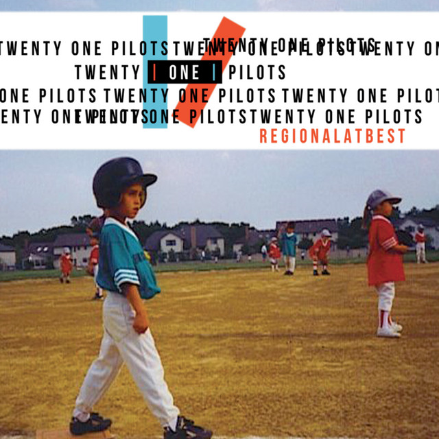

Regional At Best
| 
Regional at Best, es el segundo álbum lanzado de forma independiente por el grupo musical estadounidense Twenty One Pilots, publicado el 8 de julio de 2011. El segundo álbum cambió de estilo musical respecto al primero, este teniendo elementos del indietronica, indie rock, electrónica y hip hop. Artista: Twenty One Pilots Géneros: Indie pop, Rap alternativo Fecha de publicación: 8 de julio de 2011 Duración: 66:25 |
Canciones
|